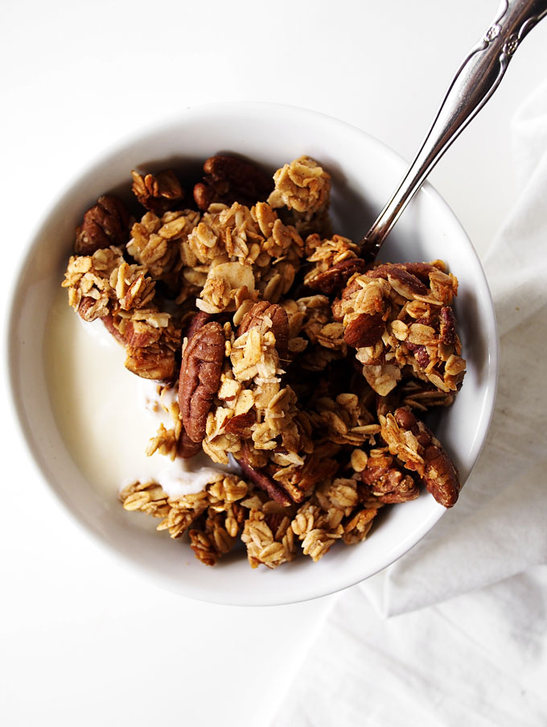

Cardamom Granola

One of my favourite breakfast recipes from 26 Grains. The perfect blend of nuttiness and sweetness with a kick of spice. Perfect for a cold autumn morning.
A spicy twist on traditional granola. Adding cardamom pods will transform your granola into a dish that warms the soul and keeps you toasty all morning.
Cardamom Granola Ingredients (serves 4)
- 330g oats
- 100g of mixed nuts (Almonds, Hazelnuts, Brazilian nuts work well)
- 100g of mixed seeds (Pumpkin seeds, sunflower seeds work well)
- 6 green cardamom pods
- 6 tablespoons of maple syrup
- S1 tablespoon of ground cinnamon
- Sea salt
- 6 tablespoons of olive oil
Steps
- Preheat oven to 180C (fan 160C, or gas mark 4)
- Deskin your hazelnuts if you cannot buy them without skins, To do this, add hazelnuts to a baking tray, and place in your preheated oven for 10 minutes. Let them cool for 5 minutes after, then rub in your hands so the skins will easily fall off.
- Finely chop up nuts.
- Add all your dry ingredients to a baking tray. Add your oats, then the chopped nuts, then your seeds last.
- Crush your cardamom pods to remove the seeds within. Sprinkle the seeds into the baking tray, and then add your cinnamon.
- Add olive oil, maple syrup, and a pinch of sea salt. Mix this all together.
- Roast granola in oven for 40 mins and stir every 10 mins.
- When golden brown, your granola will be finished.
- Serve with your favourite yoghurt.